Mesh Denoising
This tour explores denoising of 3-D meshes using linear filtering, heat diffusion and Sobolev regularization.
Contents
Installing toolboxes and setting up the path.
You need to download the following files: signal toolbox, general toolbox and graph toolbox.
You need to unzip these toolboxes in your working directory, so that you have toolbox_signal, toolbox_general and toolbox_graph in your directory.
For Scilab user: you must replace the Matlab comment '%' by its Scilab counterpart '//'.
Recommandation: You should create a text file named for instance numericaltour.sce (in Scilab) or numericaltour.m (in Matlab) to write all the Scilab/Matlab command you want to execute. Then, simply run exec('numericaltour.sce'); (in Scilab) or numericaltour; (in Matlab) to run the commands.
Execute this line only if you are using Matlab.
getd = @(p)path(p,path); % scilab users must *not* execute this
Then you can add the toolboxes to the path.
getd('toolbox_signal/'); getd('toolbox_general/'); getd('toolbox_graph/');
3-D Triangulated Meshes
The topology of a triangulation is defined via a set of indexes \(\Vv = \{1,\ldots,n\}\) that indexes the \(n\) vertices, a set of edges \(\Ee \subset \Vv \times \Vv\) and a set of \(m\) faces \(\Ff \subset \Vv \times \Vv \times \Vv\).
We load a mesh. The set of faces \(\Ff\) is stored in a matrix \(F \in \{1,\ldots,n\}^{3 \times m}\). The positions \(x_i \in \RR^3\), for \(i \in V\), of the \(n\) vertices are stored in a matrix \(X_0 = (x_{0,i})_{i=1}^n \in \RR^{3 \times n}\).
clear options; name = 'elephant-50kv'; options.name = name; % useful for displaying [X0,F] = read_mesh(name);
Number \(n\) of vertices and number \(m\) of faces.
n = size(X0,2); m = size(F,2);
Display the mesh in 3-D.
options.lighting = 1;
clf;
plot_mesh(X0,F,options); axis('tight');
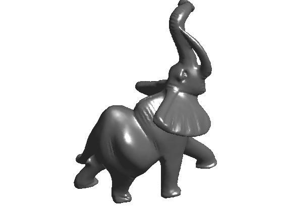 Noisy Mesh
We generate artificially a noisy mesh by random normal displacement along the normal. We only perform normal displacements because tangencial displacements do not impact the geometry of the mesh.
The parameter \(\rho>0\) controls the amount of noise.
rho = 0.015;
We compute the normals \(N = (N_i)_{i=1}^n\) to the mesh. This is obtained by averaging the normal to the faces ajacent to each vertex.
N = compute_normal(X0,F);
We create a noisy mesh by displacement of the vertices along the normal direction \[ x_i = x_{0,i} + \rho \epsilon_i N_i \in \RR^3 \] where \(\epsilon_i \sim \Nn(0,1)\) is a realization of a Gaussian random variable, and where \(N_i \in \RR^3\) is the normal of the mesh for each vertex index \(i\).
X = X0 + repmat(rho*randn(1,n),[3,1]).*N;
Display the noisy mesh.
clf;
plot_mesh(X,F,options); axis('tight');
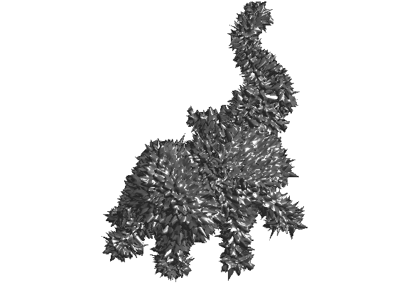 Adjacency Matrix
We define linear operators that compute local averages and differences on the mesh.
First we compute the index of the edges that are in the mesh, by extracting pairs of index in the \(F\) matrix.
E = [F([1 2],:) F([2 3],:) F([3 1],:)];
Add the reversed edges. This defines the set of edges \(\Ee\) that is stored in a matrix \(E \in \{1,\ldots,n\}^{2 \times p}\).
E = unique_rows([E E(2:-1:1,:)]')';
We keep only oriented pairs of index \((i,j)\) such that \(i<j\), to avoid un-necessary computation.
E0 = E(:,E(1,:)<E(2,:));
This defines a matrix \(E \in \{1,\ldots,n\}^{2 \times p_0}\) where \(p_0=p/2\).
p0 = size(E0,2);
Sort the edge according to the first point (this is optional, this change nothing in the operators ...).
[tmp,I] = sort(E0(1,:)'); E0 = E0(:,I);
Display statistics of the mesh.
disp(['#vertices=' num2str(n) ', #faces=' num2str(m) ', #edges=' num2str(p0) '.']);
#vertices=24955, #faces=49918, #edges=74877.
The weight matrix \(W\) is the adjacency matrix defined by \[ W_{i,j} = \choice{ 1 \qifq (i,j) \in \Ee, \\ 0 \quad \text{otherwise.} } \] Since most of the entries of W are zero, we store it as a sparse matrix.
W = make_sparse( E(1,:), E(2,:), ones(size(E,2),1) );
Compute the connectivity weight vector \( d \in \NN^n \) \[ d_i = \sum_{j} W_{i,j} \] i.e. \(d_i\) is the number of edges connected to \(i\).
d = full( sum(W,1) );
Display the statistics of mesh connectivity.
clf;
hist(d,min(d):max(d));
axis('tight');
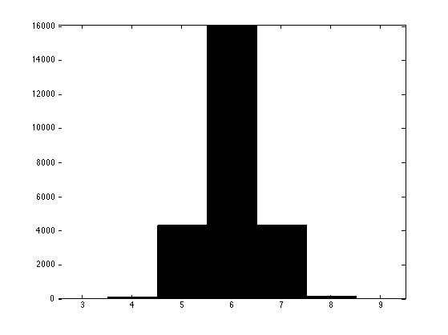 Store in sparse diagonal matices D and iD respectively \(D=\text{diag}_i(d_i)\) and \(D^{-1} = \text{diag}_i(1/d_i)\).
D = spdiags(d(:), 0, n,n); iD = spdiags(d(:).^(-1), 0, n,n);
The normalized weight matrix is defined as \[ \tilde W_{i,j} = \frac{1}{d_i} W_{i,j}, \] and hence \(\tilde W = D^{-1} W\).
tW = iD * W;
It satisfies \[ \forall i , \quad \sum_j \tilde W_{i,j} = 1, \] i.e. \(\tilde W \text{I} = \text{I}\) where \(\text{I} \in \RR^n\) is the vector constant equal to one.
The operator \(\tilde W \in \RR^{n \times n} \), viewed as an operator \(\tilde W : \RR^n \rightarrow \RR^n\), can be thought as a low pass filter.
Laplacian and Gradient Operators
The un-normalized Laplacian is on the contrary a symmetric high pass operator \[ L = D-W \in \RR^{n \times n}. \] It satisfies \(L \text{I} = 0\).
L = D - W;
The gradient operator compute directional derivative along edges. It can be used to factor the Laplacian operator, but in practice it is never computed explicitely since it is never needed in numerical computation.
Warning: building sparse matrix seems to be quite slow under Scilab, so you might want to skip this part if you are a Scilab user.
To represent the gradient, we index the set of (oriented) edges \( \Ee_0 = (e_k)_{k=1}^{p_0} \) where each edge is \(e_k = (i,j) \in \{1,\ldots,n\}^2\) with \(i<j\).
The gradient operator is a matrix \(G \in \RR^{p_0 \times n}\) defined as, for all \(e_k=(i,j)\) and all \(\ell \notin \{i,j\}\), \[ G_{k,i}=1, \quad G_{k,j}=-1, \quad G_{k,\ell}=0. \]
It is stored as a sparse matrix, and can be thought as a derivative operator \(G : \RR^n \rightarrow \RR^{p_0} \) that maps signal defined on vertices to differences located along directed edges.
G = make_sparse( [1:p0 1:p0], [E0(1,:) E0(2,:)], [ones(1,p0) -ones(1,p0)] );
Display the non-zero entries of G and W.
clf; subplot(1,2,1); spy(W); title('W'); subplot(1,2,2); spy(G); title('G');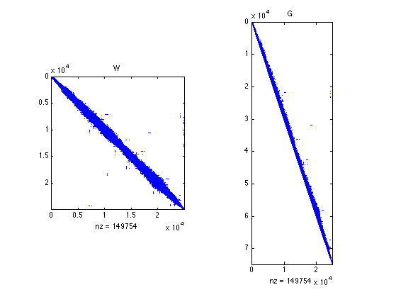
The Laplacian can be factored as follow \[ L = G^* G \] where \(G^*\) is the transposed matrix (i.e. the adjoint operator, which can be thought as some kind of divergence).
Check numerically that the factorization indeed hold.
err = norm( G'*G - L, 'fro'); disp(['Factorization error (should be 0) = ' num2str(err,2) '.']);
Factorization error (should be 0) = 0.
Note that this factorization shows that \(L\) is a positive semi-definite operator, i.e. it satisfies \[ \dotp{L f}{f} = \norm{G f}^2 \geq 0. \] If the mesh is connected, then only constant signals \(f \in \RR^n\) satisfies \(Lf=0\).
Note that this convention is the contrary to the usual convention of differential calculus, in which a Laplacian is a negative operator.
Function Denoising with Filtering
A signal defined on the mesh is a vector \(f \in \RR^n\), where \(f_i \in \RR\) is the value at vertex \(1 \leq i \leq n\).
Load a texture image \(I\).
M = load_image('lena',256);
Compute spherical coordinates \( (\theta_i,\phi_i)\) for each vertex \(x_{0,i}\) on the mesh.
v = X0 - repmat(mean(X0,2), [1 n]); theta = acos(v(1,:)./sqrt(sum(v.^2)))/pi; phi = (atan2(v(2,:),v(3,:))/pi+1)/2;
Interpolate the texture on the mesh.
x = linspace(0,1,size(M,1)); f = interp2(x,x,M',theta,phi)';
Display the textured mesh.
options.face_vertex_color = f(:);
clf;
plot_mesh(X0,F, options);
lighting none;
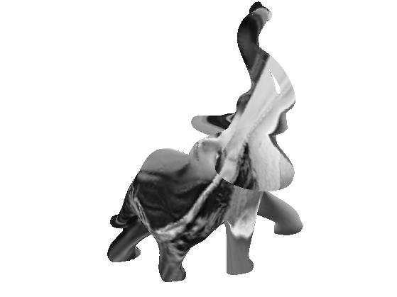 The operator \(\tilde W : \RR^n \rightarrow \RR^n\) can be used to smooth a function \(f\), simply by computing \(\tilde W f \in \RR^n\).
To further smooth the mesh, it is possible to iterate this process, by defining \(f^{(0)} = f\) and \[ f^{(\ell+1)} = \tilde W f^{(\ell)}.\] Note that one has \( f^{(\ell)} = \tilde W^{\ell} f, \) but it is preferable to use the iterative algorithm to do the computations.
Exercice 1: (check the solution) Display the evolution of the image on the mesh as the number of iterations increases.
exo1;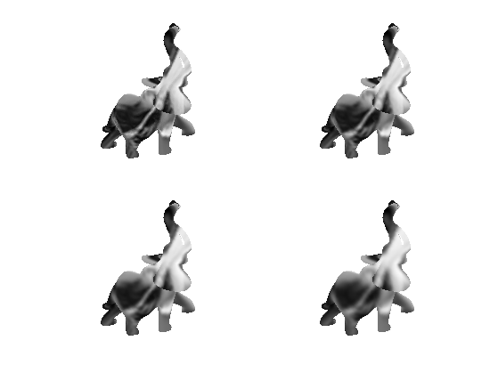
Mesh Denoising with Filtering
The quality of a noisy mesh is improved by applying local averagings, that removes noise but also tends to smooth features.
The operator \(\tilde W : \RR^n \rightarrow \RR^n\) can be used to smooth a function, but it can also be applied to smooth the position \(W \in \RR^{3 \times n} \). Since they are stored as row of a matrix, one should applies \(\tilde W^*\) (transposed matrix) on the right side. \[ X^{(0)} = X \qandq X^{(\ell+1)} = X^{(\ell)} W^* \]
niter = 5; X1 = X; for i=1:niter X1 = X1*tW'; end
We can compute the errors in dB with respect to the clean mesh, using \[ \text{SNR}(X,Y) = -20 \log_{10} \pa{ \norm{X-Y}/\norm{Y} }. \]
pnoisy = snr(X0,X); pfilt = snr(X0,X1); disp(strcat(['Noisy=' num2str(pnoisy,2) 'dB, denoised=' num2str(pfilt,2) 'dB.']));
Noisy=27dB, denoised=40dB.
Display the results.
clf; plot_mesh(X1,F, options); axis('tight'); shading('interp');
Exercice 2: (check the solution) Determine the optimal number of iterations to maximize the SNR. Record, for each number i of iteration, the SNR in err(i).
exo2;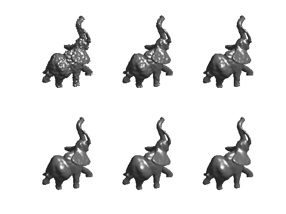
Plot the error as a function of the number of iterations.
clf; plot(0:length(err)-1, err, '.-'); axis('tight'); set_label('Iteration', 'SNR');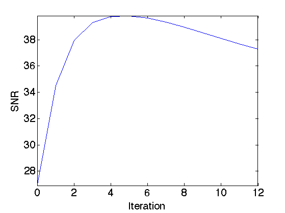
Mesh Denoising with Linear Heat Diffusion
Iterative filtering is closely related to the heat diffusion. The heat diffusion is a linear partial differential equation (PDE) that compute a continuous denoising result for arbitrary time \(t\). It is thus more precise than simple iterative filterings.
This PDE defines a function \(f_t \in \RR^n\) parameterized by the time \(t>0\) as \[ \forall t>0, \quad \pd{f_t}{t} = -\tilde L f_t \qandq f_0 = f, \] where \( \tilde L \) is the symetric normaled Laplacian defined as \[ \tilde L = D^{-1} L = \text{Id}_n - \tilde W. \]
tL = iD * L;
This PDE is applied to the three components of a 3-D mesh to define a surface evolution \[ \forall t>0, \quad \pd{X_t}{t} = -X_t \tilde L^* \qandq f_0 = f. \]
One can approximate the solution to this PDE using explicit finite difference in time (Euler explicit scheme) \[ X^{(\ell+1)} = X^{(\ell)} - \tau X^{(\ell)} \tilde L^* = (1-\tau) X^{(\ell)} + \tau X^{(\ell)} \tilde W^* \] where \(0 < \tau < 1\) is a (small enough) time step and \(f^{(\ell)}\) is intended to be an approximation of \(X_t\) at time \(t=\tau \ell\). The smaller \(\tau\), the better the approximation.
One can see that with \(\tau=1\), one recovers the iterative filtering method.
Time step \(\tau\).
tau = .2;
Maximum time of resolution.
Tmax = 40;
Number of iterations needed to reach this time.
niter = ceil(Tmax/tau);
Initial solution at time \(t=0\).
Xt = X;
We use an explicit discretization in time of the PDE. Here is one iteration.
Xt = Xt - tau*Xt*tL';
Exercice 3: (check the solution) Compute the linear heat diffusion. Monitor the denoising SNR err(l) between \(X_t\) and \(X_0\) at iteration index l.
exo3;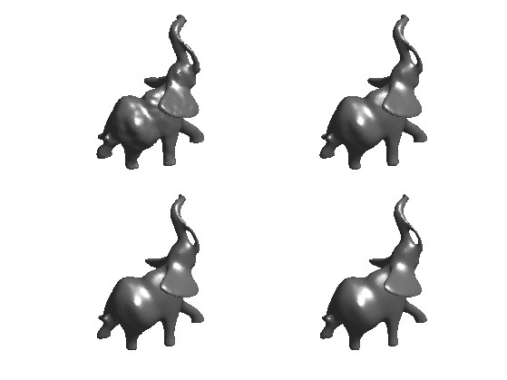
Plot the error as a function of time.
t = linspace(0,Tmax,niter); clf; plot(t, err); axis('tight'); set_label('Time', 'SNR');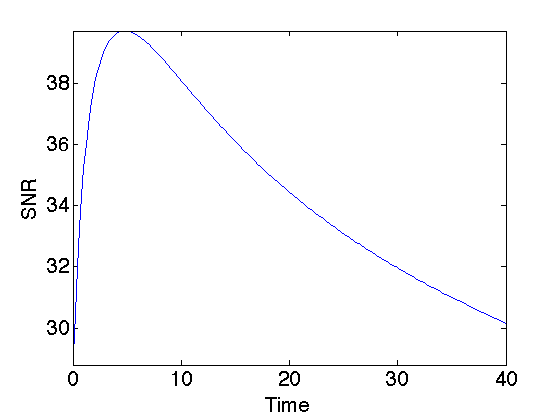
Mesh Denoising with Sobolev Regularization
Instead of solving an evolution PDE, it is possible to do denoising by solving a quadratic regularization.
Denoting \(G \in \RR^{p_0 \times n}\) the gradient operator, the Soboleb norm of a signal \(f \in \RR^n\) is defined as \[ J(f) = \norm{G f}^2 = \dotp{L f}{f}. \] It is extended to mesh poisition \(X \in \RR^{3 \times n}\) as \[ J(X) = \norm{X G^*}^2 = \dotp{X L}{X}, \] (remeber that \(L\) is symmetric).
Denoising of a noisy set of vertices \(X\) is then defined as the solution of a quadratic minimization \[ X_\mu = \uargmin{Z \in \RR^{3 \times n}} \norm{Z-X}^2 + \mu J(Z)^2. \] Here \(\mu \geq 0\) controls the amount of denoising, and should be proportional to the noise level.
The solution to this problem is obtained by solving the following symmetric linear system \[ X_\mu^* = (\text{Id}_n + \mu L )^{-1} X^* \] (remember that the mesh vertex position are stored as rows, hence the transposed).
We select a penalization weight \(\mu\). The larger, the smoother the result will be (more denoising).
mu = 10;
We set up the matrix of the system. It is important to use sparse matrix to have fast resolution scheme.
A = speye(n,n)+mu*L;
We solve the system for each coordinate of the mesh. Since the matrix is highly sparse, it is very interesting to use an iterative method to solve the system, so here we use a conjugate gradient descent (function perform_cg)|.
Xmu = X; for i=1:3 b = X(i,:)'; Xmu(i,:) = perform_cg(A,b)'; end
Display the result.
clf; plot_mesh(Xmu,F, options);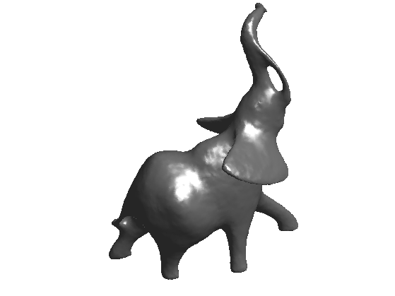
Exercice 4: (check the solution) Solve this problem for various \(\mu\) on a 3D mesh. Draw the evolution of the SNR denoising error as a function of \(\mu\).
exo4;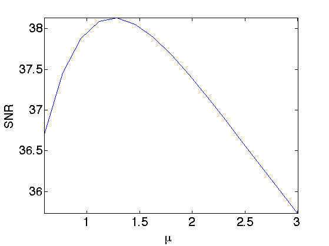